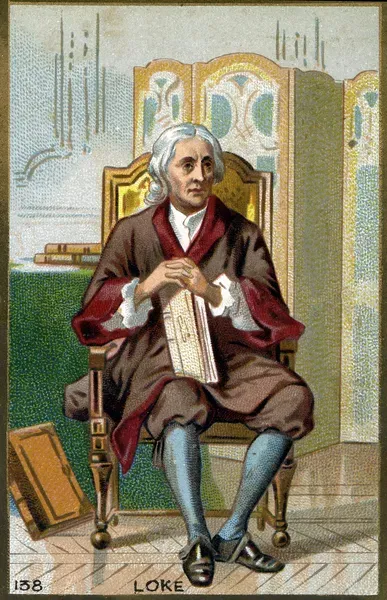
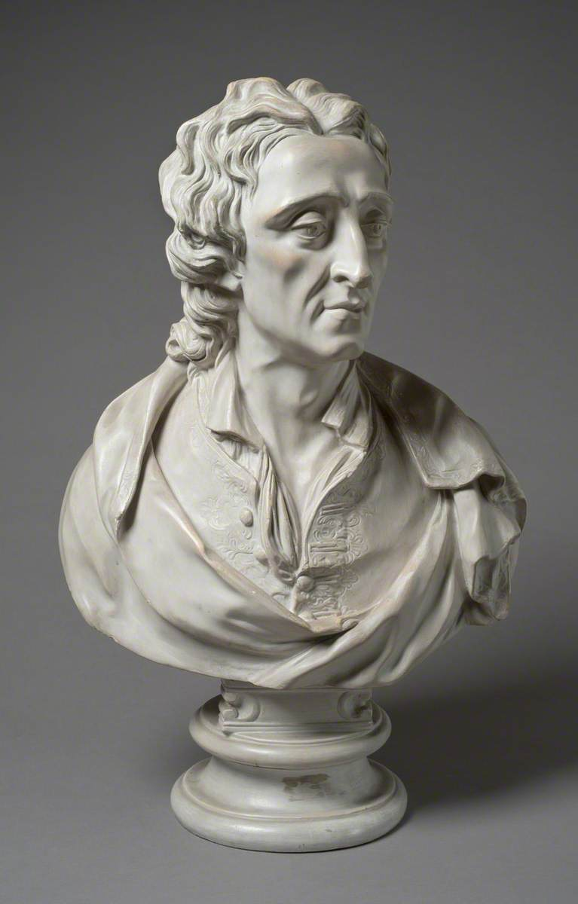
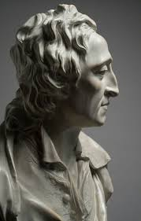

Felhasználónév: John Locke
Szlogen: "Nullum numen abest, si sit Prudentia"
Foglalkozás: Filozófus, orvos, politikus
Hobbik: Botanika, meteorológia, politikai viták
Bemutatkozás:
Puritán családból származom, és tanulmányaimat Oxfordban kezdtem, ahol nemcsak a skolasztikát tanulmányoztam, hanem az önfegyelem és a szellemi függetlenség fontosságát is megtanultam. Bár eredetileg egyházi pálya előtt álltam, végül az orvostudományt választottam, majd diplomáciai és politikai feladatokat vállaltam. Politikailag a királyi hatalom korlátozását és a parlament jogainak erősítését tartottam fontosnak, emiatt Hollandiába kellett menekülnöm 1683-ban. Az emigráció éveiben írtam meg legfontosabb műveimet, köztük az Értekezés az emberi értelemről és a Levél a vallási türelemről című munkákat. Filozófiai és politikai gondolataim az emberi megismerésből és a társadalmi szerződés elvéből indultak, hozzájárulva a korai felvilágosodáshoz és a liberalizmus kialakulásához.


